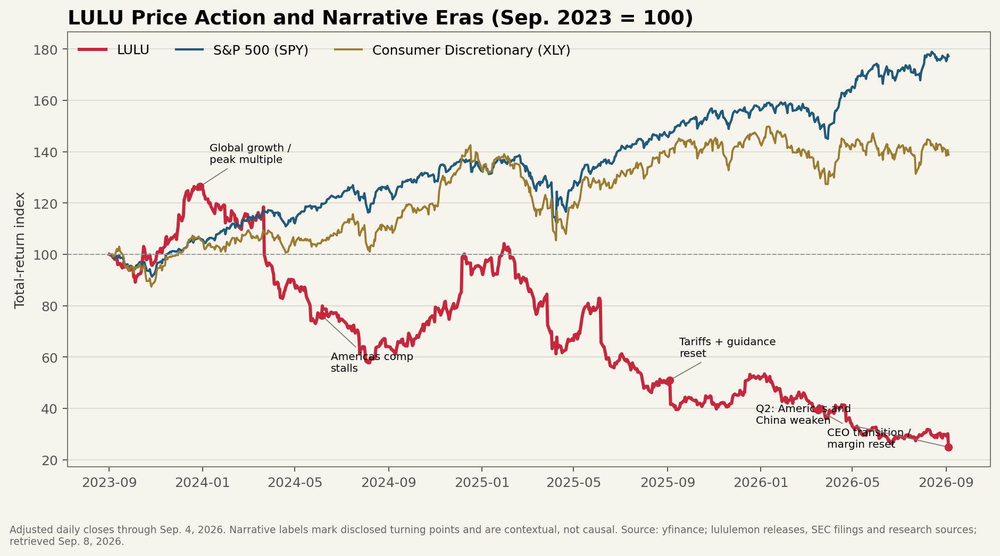
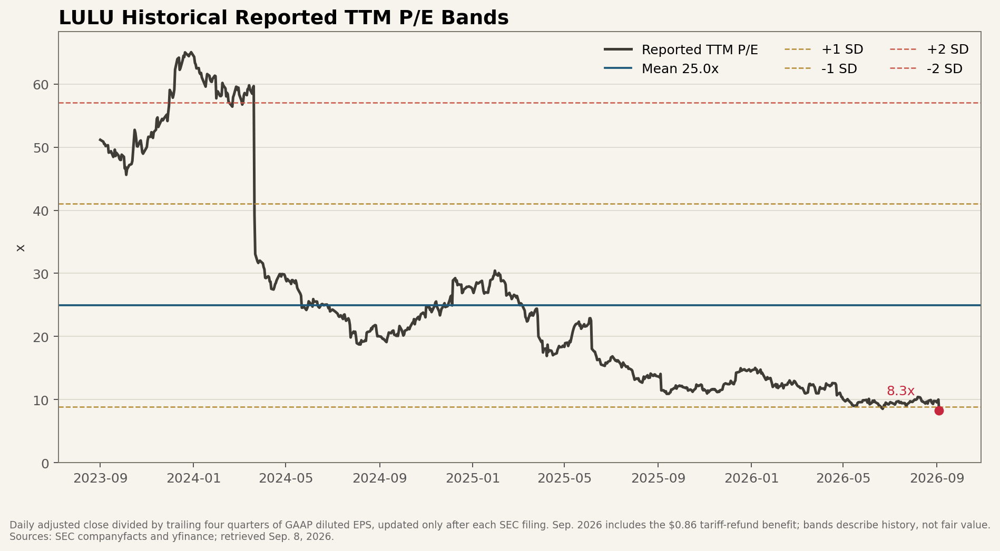
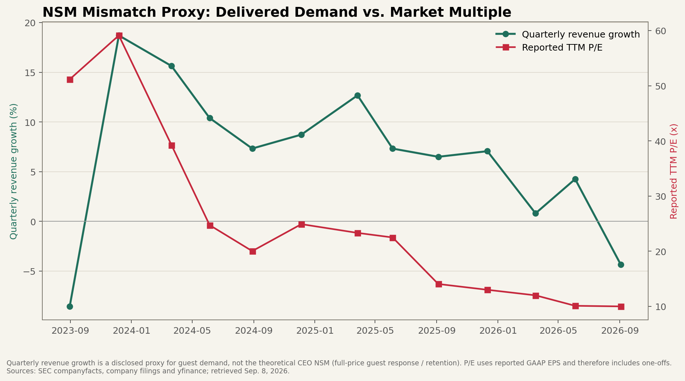

Ticker: LULU
Date: 2026-09-08
Classification: 进入下一阶段研究 · 高波动反转候选
结论：进入下一阶段研究，但当前不具备建仓准备度。 9 月 4 日收盘价 100.61 美元，相当于约 10.9 倍供应商远期 EPS，已低于大多数品牌运动服饰同行；市场正在把 2026 年收入下降 5%–7%、剔除一次性退税后约 8.62–8.87 美元的公司 EPS 指引外推成长期品牌衰退。[1][6]
值得继续研究的不是“便宜”，而是全球化损伤是否被过度外推。 Q2 美洲可比销售 -12%，中国大陆按固定汇率 -8%，女装紧身裤约 -20%；这已经不是单一宏观噪音。然而 Rest of World 固定汇率收入仍增 6%，公司仍有 13.90 亿美元现金、无传统有息借款，且股数快速下降。若中国事件性流量冲击消退、女裤新品接替紧身裤、全价销售在 2027 年转正，当前倍数并未支付任何修复价值。[2][4]
核心风险：这也可能是价值陷阱。最新高盛模型把 FY27/FY28 EPS 降至 8.38/8.43 美元，目标价 95 美元；大摩更悲观，FY28 EPS 8.11 美元、目标价 83 美元。若中国转弱代表品牌老化向全球扩散，10 倍并不便宜。[4][5]
证据置信度：中高承保状态：等待验证数据截止：2026-09-04 收盘 / 2026Q2
| 来源类别 | 最新来源日期 | 新鲜度 | 距报告日 |
|---|---|---|---|
| 卖方研报 / 模型 | 2026-09-04 | 当前 | 4 天；高盛、大摩均已反映 Q2 |
| 电话会 | 2026Q2 · 09-03 | 当前 | 5 天；另留存前三次电话会 |
| SEC 原始文件 | 10-Q · 09-03 | 当前 | 5 天；FY2025 10-K 为 03-17 |
| 新闻 / 市场反应 | 2026-09-04 | 当前 | 4 天；FreshRSS 的 2025 历史覆盖较薄 |
| 买方 / 运营者观点 | 无有效 IGB 命中 | 缺口 | 已执行 8 组检索；空结果不作证据 |
| 播客 / 深度讨论 | 2025-08-17 | 有用但已过时 | 约 13 个月；仅作旧牛论据基线 |
| 项目 | 最新情况 |
|---|---|
| 市场数据 | 100.61 美元；52 周 97.99–225.98 美元；市值约 111–114 亿美元，含经营租赁口径的供应商 EV 约 119–122 亿美元。9 月 4 日单日下跌 17.4%。[6] |
| 经营结果 | Q2 收入 24.16 亿美元，同比 -4.3%；全球可比销售 -9%，固定汇率 -10%；美洲 / 中国大陆 / Rest of World 收入 -8% / +4% / +5%，固定汇率后中国 -2%、RoW +6%。[1][2] |
| 利润质量 | 报告毛利率 60.5%，但包含 1.345 亿美元退税、贡献 560bp；机械剔除后约 54.9%。报告 EPS 2.92 美元，剔除 0.86 美元退税及利息影响约 2.06 美元，同比约 -34%。[1][2] |
| 资产负债 / 回购 | 现金 13.90 亿美元；存货 17.11 亿美元，同比 -1%、单位数 -7%；经营租赁负债约 21.41 亿美元，无传统有息借款。Q2 回购 270 万股、耗资 3.30 亿美元，平均约 122 美元，略高于当前价。[1][2] |
| 技术 / 仓位 | 9 月 4 日价格跌破 EMA50 119.92 美元及布林下轨，RSI 31.8、MACD 柱 -1.15，波动扩张且无正背离。供应商显示机构持股约 81%，空头约占流通盘 10.0%（截至 8 月中旬，聚合口径）。[6][10] |
| 关键指标 | 值 | 投资含义 |
|---|---|---|
| FY2025 美洲收入 | 78.47 亿 / -1% | 仍占 71%，国际增长尚无法抵消核心市场停滞。 |
| FY2025 中国收入 | 17.55 亿 / +29% | 过去增长引擎很强，Q2 固定汇率转负使“全球损伤”成为新风险。 |
| FY2025 经营利润率 | 19.9% | 从 FY2024 的 23.7% 下滑；固定成本、促销和关税决定 EPS 修复弹性。 |
| FY2025 FCF | 约 9.22 亿美元 | 按当前市值约 8.3% 历史 FCF 收益率，但 2026 盈利下滑意味着不可直接年化。 |
以上 FY2025 数字均为已报告事实；FCF＝经营现金流 16.02 亿 − 资本开支 6.81 亿。市场数据为供应商聚合值，租赁负债与 EV 口径需避免和“无有息债”混淆。[3][6]
市场主锚是远期 P/E，卖方的备选锚是 Q5–Q8 EV/EBITDA。当前约 10.9 倍供应商远期 P/E；高盛最新用 4.5 倍 Q5–Q8 EV/EBITDA 得出 95 美元目标价，大摩以约 10 倍 FY27E P/E 得出 83 美元。两者共同假设的不是短暂波动，而是 2027–2028 EPS 仍停留约 8 美元。[4][5][6]
公司 FY2026 指引 EPS 9.48–9.73 美元包含 0.86 美元一次性退税，基础约 8.62–8.87 美元；因此当前价约为 11.3–11.7 倍公司基础指引。市场已经大幅放弃过去的高成长复利锚，但还没有给出“中国问题是暂时舆情 / 渠道事件还是品牌衰退”的答案。[1]
| 公司 | 市值 | 远期 P/E | EV/收入 | 最新收入增速 | TTM FCF率 |
|---|---|---|---|---|---|
| LULU | $11.1bn | 10.9x | 1.07x | -4.3% | 10.4% |
| NKE | $57.0bn | 16.8x | 1.27x | -1.1% | 4.1% |
| DECK | $11.7bn | 10.3x | 1.91x | +5.7% | 15.8% |
| ONON | $9.4bn | 13.5x | 2.70x | +13.5% | 9.0% |
| ADDYY | $30.3bn | 13.8x | 1.35x | +13.3% | 3.7% |
来源：yfinance 聚合数据，2026-09-08 获取，价格以最近完整交易日为准。收入增速与利润期点并不完全一致；ONON/ADDYY 的币种、ADR 与会计口径也不同。表格只显示市场如何给增长定价，不把供应商指标当作审计财务。[6]



图二的 GAAP TTM P/E 曾被 Mirror 相关减值扭曲，当前又受一次性退税抬高 EPS，因此历史均值不是合理价值；它只显示市场如何从“高成长”切换到“永久衰退”。图三用季度收入增速作为连续可复算的需求代理，真正更优的 CEO NSM——全价售罄、核心客复购和新品转化——没有连续公开时间序列。
| 视角 | 判断 |
|---|---|
| CEO NSM | 全价销售健康度 / 新品与核心客响应。管理层把目标明确为恢复 full-price sales growth；可观察代理包括美洲可比销售、女裤新品接替率、折扣渗透和高价值客流量。[7] |
| 长期投资者 NSM | 同店全价增长转化为单位门店现金回报。核心是可比销售、毛利率和经营利润率共同改善，而不是靠开店维持收入。管理层曾披露 2025 新店 ROI 超 100%、门店回收期不足一年，但该公司主张需要用门店 cohort 再核验。[7] |
| 市场共识 NSM | 美洲可比销售与 FY27–28 EPS。市场不再奖励国际门店数，而在惩罚核心市场负 comps、降价 / 固定成本去杠杆和低于 9 美元的中期 EPS。[4][5] |
| 错位类型 | 危险分化，伴随潜在叙事陷阱。社区参与和新品“绿芽”没有转成全价收入；但市场可能把 2026 的产品 / 舆情冲击错误当作永久全球衰退。当前只存在可研究的错价假说，不存在已证实的健康滞后。 |
面料与版型解决运动 / 日常穿着痛点 → 新品被核心客全价购买并复购 → 社区和门店提升获客与频次 → 可比销售与单位店产出增长 → 少打折、毛利稳定 → 门店现金回收与自由现金流 → 回购减少股数、放大每股价值
| 情景 | 2–3 年盈利 / 倍数 | 价值区间 | 相对 $100.61 |
|---|---|---|---|
| 熊：全球品牌衰退 | EPS $8.0–8.5；9–10x | $72–85 | -28% 至 -16% |
| 基准：止跌、低增长 | EPS $9.5–10.5；12–14x | $114–147 | +13% 至 +46% |
| 牛：新品 / 中国修复 | EPS $12–13；16–18x | $192–234 | +91% 至 +133% |
情景为 PM 判断，不是目标价。熊案与最新高盛 / 大摩盈利路径相近；牛案要求利润率和品牌倍数同时修复，不能用历史高倍数自动外推。未做完整三表与租赁现金流归一化，因此区间只用于判定后续研究的潜在材料性。[4][5]
Classification: 进入下一阶段研究 · 高波动反转候选。
Wrong anchor：成立为可信假说，但尚未证实。当前 10–11 倍锚把 2026 基础 EPS 当成接近永久水平；如果国际 / 中国恢复且美洲 comps 只需回到零附近，这个锚会同时低估 EPS 与合理倍数。反过来，Q2 中国也转负使“只是美国周期”这条旧牛论据失效。
Material upside：满足。牛案需要的不是回到历史 30–40 倍，只需 EPS 回到 12–13 美元且倍数回到 16–18 倍，2–3 年价值即可接近当前价的两倍；熊案约 20%–30% 下行，赔率足够大但路径高度分叉。
Clear validation path：满足。未来 2–4 个季度的美洲 / 中国 comps、紧身裤与宽松女裤组合、全价销售与 markdown、毛利（剔除退税）、存货单位、门店计划和新 CEO 2027 框架都可直接验证。故应推进门店 cohort、消费者 / 社媒与 SKU 级别研究，而不是仅因低 P/E 买入。
来源与限制：全部九个规定工作流均已尝试。IGB 买方 / 运营者索引没有有效 LULU 覆盖；高盛公司页未提供 Quantum standard financials；FreshRSS 的 2025 历史新闻较薄。FMP 预测期标签存在非直观排序，未用作精确目标价。报告把已报实际、公司指引、卖方预测和 PM 情景明确分开。本文为研究筛选，不是个性化投资建议。